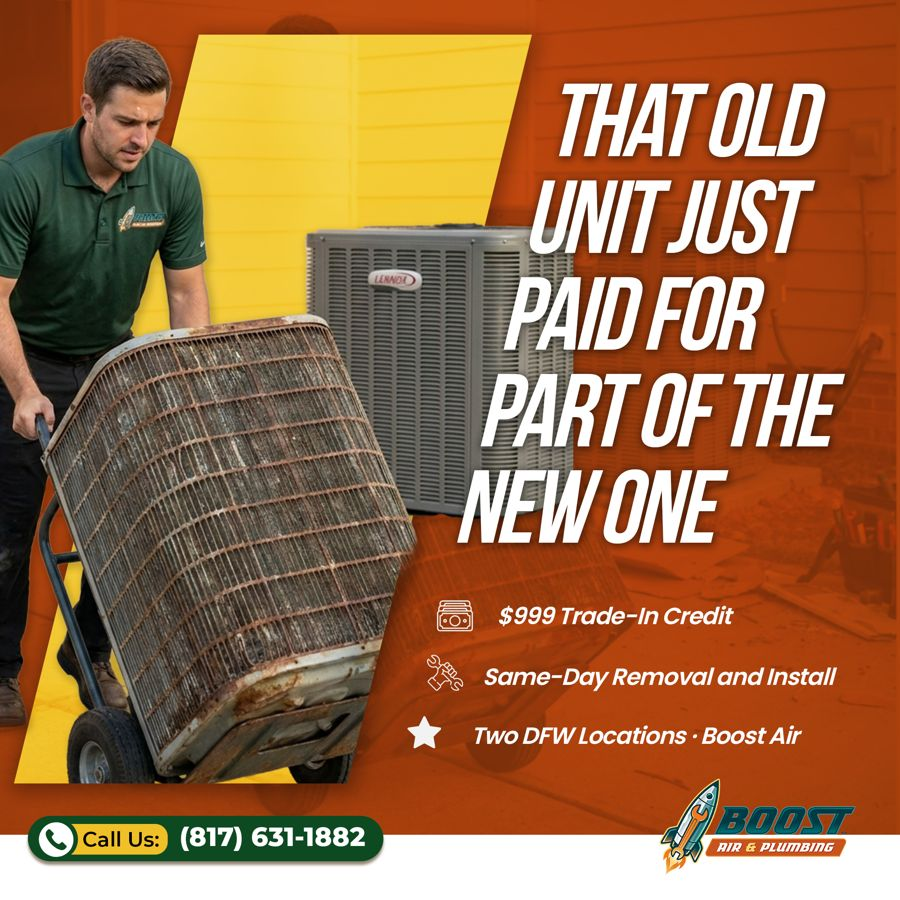
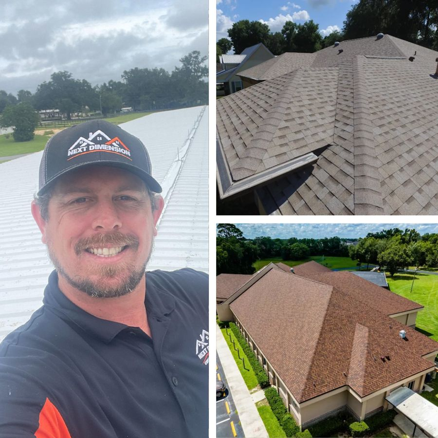
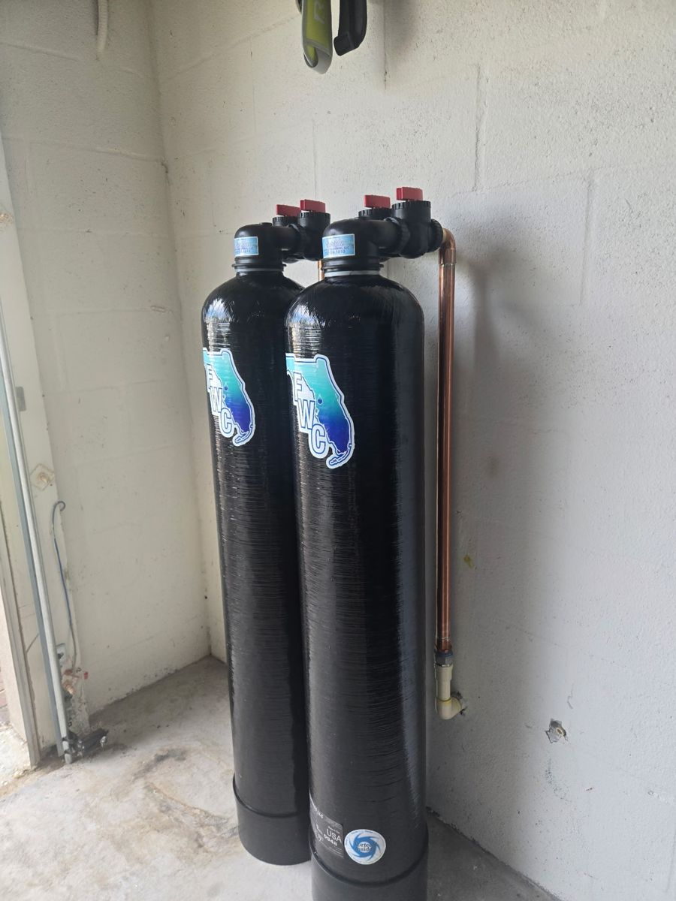
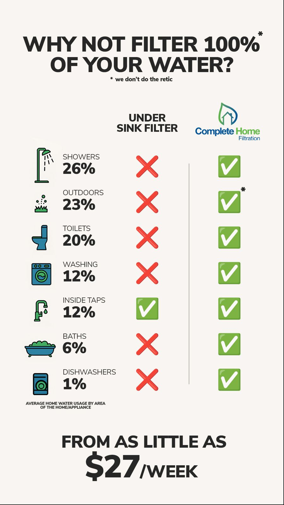
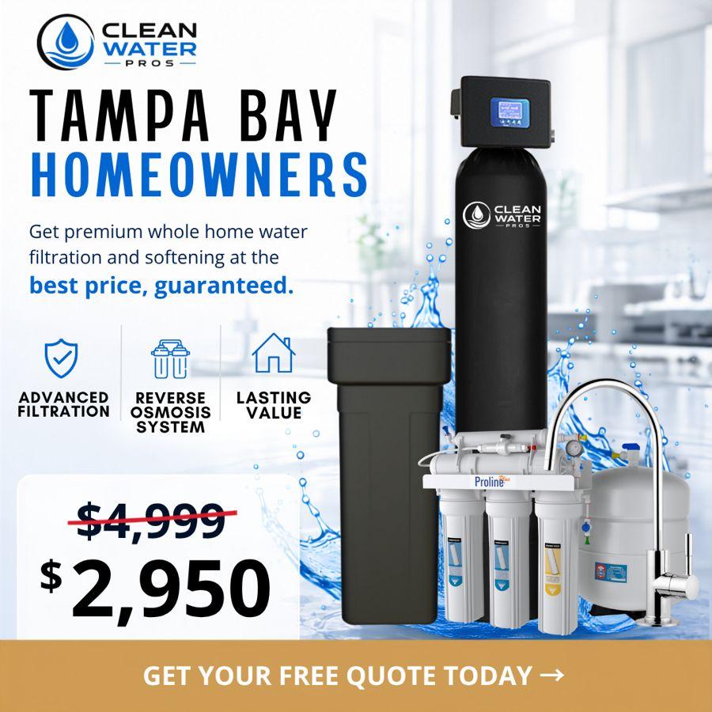

Biscayne Water · BOFU statics v3, re-scored with the ACQ / Hormozi playbook
46 BOFU ads from v3 re-scored on a 10-point rubric built from the Acquisition.com private Skool KB, plus 15 BW rewrites using ACQ offer frameworks. Built Nov 22, 2026.
How to read citations. Codes like L024 11:17 mean lesson code + transcript minute. Quotes are verbatim from the KB transcripts; everything else is a paraphrase. The four-term value equation (dream outcome × likelihood ÷ time delay × effort) is not taught as its own lesson in the KB; it comes from the $100M Offers book, and the KB applies it (F007, HL0710). Community posts are from members/staff, not Alex.
KB sources used /workspace/skool/kb · /workspace/acq_vantage_kb.zip
| Code | Lesson | File |
|---|---|---|
| L024 | Workshop Recordings › Marketing With Alex Hormozi › Ch 3 Better Offers & More Creative | 03_workshop_recordings/024_chapter_3_better_offers_more_creative.md |
| L025 | Workshop Recordings › Marketing With Alex Hormozi › Ch 4 Hooks, Targeting & Scaling | 03_workshop_recordings/025_chapter_4_hooks_targeting_scaling.md |
| L029 | Workshop Recordings › Marketing With Alex Hormozi › Ch 8 Split Testing & Moving Mountains | 03_workshop_recordings/029_chapter_8_split_testing_moving_mountains.md |
| L019 | Workshop Recordings › Scaling With Alex Hormozi › Ch 9 Business Type Playbooks (home services) | 03_workshop_recordings/019_chapter_9_business_type_playbooks.md |
| L030 | Workshop Recordings › Sales With Alex Hormozi (full workshop) | 03_workshop_recordings/030_sales_with_alex_hormozi.md |
| L032 | Workshop Recordings › Sales With Alex Hormozi › Ch 2 Building Proof Systems | 03_workshop_recordings/032_chapter_2_building_proof_systems.md |
| L033 | Workshop Recordings › Sales With Alex Hormozi › Ch 3 Follow-Up Systems | 03_workshop_recordings/033_chapter_3_follow_up_systems.md |
| L054 | Workshop Recordings › LTV With Alex Hormozi › Ch 9 Offer Components & Loss Leader Strategy | 03_workshop_recordings/054_chapter_9_offer_components_loss_leader_strategy.md |
| L055 | Workshop Recordings › LTV With Alex Hormozi › Ch 10 Advanced Offer Tactics & Anchoring | 03_workshop_recordings/055_chapter_10_advanced_offer_tactics_and_anchoring.md |
| F007 | Fast ROI › 10 to 1 Content Rule (Alex) | 02_fast_roi/007_10_to_1_content_rule.md |
| META | Fast ROI › META Ads Crash Course (ACQ Vantage advisor, ex-agency; not Alex) | 02_fast_roi/002_meta_ads_crash_course.md |
| HL0710 | Fast ROI › Hotlines › 2026-7-10 | Alex | 02_fast_roi/024_2026_7_10_alex.md |
| HL0526 | Fast ROI › Hotlines › 2026-5-26 | Alex | 02_fast_roi/025_2026_5_26_alex.md |
| GSO | AI Enablement › How to Create VSLs That Convert (presenter Drew, uses ACQ AI) | 04_ai_enablement/004_how_to_create_vsls_that_convert.md |
| ADV | AI Enablement › 50 Ad Variations with AI (presenter Drew) | 04_ai_enablement/014_50_ad_variations_with_ai.md |
| MM | ACQ Marketing Masterclass slides (Preston Howard, Hunter Barker, Julian Lin, Maddex Ritter) | 11_files/skool_acq_marketing_masterclass.md |
| AAM | 'How to Build an Ad Machine with AI' PDF (Hunter Ray Barker) | 11_files/skool_acq_marketing_masterclass_ai_ad_machine.md |
| PH1 | Community post 'How We Run Facebook Ads | Post-Andromeda', Preston Howard, 2025-10-13 | 05_community_marketing/posts_031.md |
| PH2 | Community post 'Why Your Lead Magnet Isn't Working', Preston Howard, 2025-08-27 | 05_community_marketing/posts_044.md |
| VEQ | Community post 'New Value Equation', Greg Martin, 2025-10-08, with Preston Howard's reply 2025-10-10 | 08_community_strategy_offer/posts_029.md |
Principles 25, cited
| Topic | Principle | Source |
|---|---|---|
| Ads & hooks | Match the hook to awareness. Most-aware prospects get offer-driven hooks, product-aware get proof-driven hooks, solution-aware get a promise, problem-aware get pain, unaware get curiosity. BOFU statics live in the first two. | L025 2:00–3:00 |
| Ads & hooks | Hooks carry most of the result. The lesson's own key quote: "Hooks are still 80% of the battle." A few hooks can work for years; once you have a winner, make many permutations of it (color, font, actor, background, speed). | L025 lesson description; L024 29:31–30:32 |
| Ads & hooks | Build ads by assembly: write 50+ hooks, 3–5 body 'meats' and a CTA, then combine them. Alex says recording hooks separately from the body had no effect on results. | L025 5:00–6:02 |
| Ads & hooks | Be clear rather than clever. The ACQ AI ad prompt also says to include the price in the offer and name the unique mechanism. (BW doesn't show a price, so the financing line stands in for it.) | ADV 10:28 |
| Offers | In easy-to-compare categories ("especially true with home services"), win on at least one vector: faster, less risky or easier. Ask what it would take to deliver the outcome in one third of the time. | L024 3:05–4:07; L019 11:11 |
| Offers / guarantees | Guarantee against the buyer's biggest fear: warranties, guarantees, or even insurance covering damages. For home services the big fears are going over budget, running over time, and headache. | L024 5:08; L019 11:11 |
| Offers | Ease means doing prep and intake work for the customer ahead of time so the experience feels seamless. Customers notice. | L024 5:08–6:09 |
| Value equation | The KB uses the value equation as fast / easy / risk-free wrappers around the reasons to act (plus cheap in B2B). The hotline frames the likelihood lever as selling certainty. The four-term formula itself (dream outcome × likelihood ÷ time delay × effort) comes from Hormozi's book $100M Offers and isn't laid out as a lesson in this KB. | F007 12:01–13:02; HL0710 19:19 |
| Value equation | Pain doesn't replace the dream outcome. It's the starting point that gets attention, and showing you understand it raises perceived likelihood (Preston Howard's reply in a community thread). | VEQ reply 2025-10-10 |
| Offer stacking | Each component of an offer should be worth the whole price on its own, and be specific, because "people can't think in the abstract". Components cost mental real estate: "if you can sell people with two things, don't have five." | L054 9:11–13:12 |
| Lead magnets | Nobody wants to 'request a quote'. Trade something they actually want for contact details. Three types: reveal a problem, a trial of the solution, or one step of a multi-step process. Example given: 'seven mistakes homeowners make'. | L024 11:17–12:18; L019 10:10 |
| Lead magnets | Change the lead magnet and you change the lead. A good one produces a high share of MQLs. Loss leaders with a real, verifiable cost convert far better (Alex's book bundle: '10 times higher'). | L054 1:00–3:03 |
| Lead magnets | Run one lead magnet per core offer. Its job "is to prove value fast and set up the constraint, not solve the entire problem." Different front-end ads per avatar can all lead into the same core offer. | PH2 post + comments |
| Lead magnets | Softening the ask with a lead magnet beat direct-offer ads on ROAS over a longer time horizon, and it scales better, because direct offers only reach the most-aware. | L024 8:10–10:15 |
| Proof | "Proof is how you sell." In person beats virtual, live beats recorded, raw (an iPhone video) can out-convert polished, showing (before/after) beats telling, other people saying it beats you saying it, and specific beats generic. Follow the law, and disclose incentives. | L032 0:00–4:04; L024 22:25 |
| Proof | Collect proof in seven places: lifecycle, social media, events, communication, bonuses, competition, delivery. Home-services example: a small bonus for a review (an extended guarantee of an extra six months, moving up the queue). | L032 6:06–7:08, 16:16 |
| Scarcity / urgency | Urgency and scarcity are "about hitting on the pain harder": what does it cost you not to act? Scarcity is escalated in confirmation texts only as real limited slots or availability. Real caps (e.g. an elite tier limited to five). | L030 31:55–32:00, 140:21; L055 11:18 |
| Retargeting | Audiences are concentric rings: people who respond to organic content are hottest, and "the next rung after that is going to be retargeting" (clicked but didn't buy). Run it across all platforms as the first rung of paid. | HL0526 5:24–6:25 |
| Local service lead gen | Home services usually have bad websites (a hidden 'request a quote' button) and poor lead nurture. Fix the page, add a sales motion and a nurture rep, and call leads fast (a roofing example: calling within ~15 seconds sharply raised close odds). | L019 10:10–17:19 |
| Closing / follow-up | Confirmation texts: the night before, the morning of, and 60 minutes prior, written like a real person, offering to pull the appointment forward. BAMFAM: book a meeting from a meeting. | L033 26:25–28:28 |
| Creative testing | Run 1–2 split tests a week and review them every Monday. Use 'orange / apple / banana' (three different concepts), then 'green / red / yellow apple' (three variations of the winner). Attack the lowest-performing step against its benchmark. | L029 5:03–7:04 |
| Creative testing | ACQ's paid setup: test (ABO) and scale (CBO) in separate campaigns, one angle per ad set, optimize on the booked meeting rather than the opt-in. Kill at 3× target CPA ("Most ads die. That's the point."). Creative is the lever: kill fast, scale slow. | MM slides; PH1 post |
| Creative testing | Every creative test should answer a commercial question. Test beliefs (fear, blame, control), not just 'ads'. Write the way you'd explain it to a friend. | META 16:32–18:37 |
| Creative sourcing | Keep a swipe file across industries (Facebook Ads Library, TikTok Creative Center), and mine creative from things you already do: lifecycle moments, events, delivery and outcome moments. | L024 20:25–31:33 |
| Offers (home-service example) | ACQ AI's grand slam offer for a $49 mosquito spray was 'a mosquito free summer pass… with a $49 trust test spray': a season-long dream outcome with a low-risk first step. | GSO 11:32 |
ACQ/Hormozi rubric 1 point each, 10 max
| # | Criterion | Passes when… | Source |
|---|---|---|---|
| A | Awareness-matched hook | Offer-driven (most aware) or proof-driven (product aware) hook for a BOFU audience. | L025 2:00–3:00 |
| H | Clear, specific hook / callout | Headline works alone; clear not clever; names who or where. | L025 desc; ADV 10:28; META 18:37 |
| O | Real offer or lead magnet | Gives value before the sale (test, report, second opinion, trial), not 'request a quote'. | L024 11:17; L019 10:10; PH2 |
| D | Dream outcome in their words | States the result the buyer wants, specifically. | L024 11:17; L054 10:11 |
| P | Likelihood: proof | Real, specific proof: numbers, certifications, reviews, before/after, face of the owner. | L032 0:00–4:04; HL0710 19:19 |
| S | Time delay cut (speed) | Shows how fast they get the result or the next step. | L024 4:07; L019 11:11 |
| E | Effort cut (ease) | 'We handle it': prep, install, payment made easy. | L024 5:08–6:09 |
| R | Risk reversal on the biggest fear | Guarantee, warranty, no obligation, price-won't-change, no pressure. | L024 5:08; L019 11:11 |
| C | Few, valuable components | Not cluttered; every item would sell on its own. | L054 9:11–13:12 |
| U | Honest reason to act now | Real deadline or limit, or the cost of inaction (pain). No invented scarcity. | L030 31:55; L055 11:18 |
Score bands: 8–10 run it now · 6–7 a strong base, fix the misses · 4–5 borrow one element · ≤3 skip. A BW rule violation (system price, 'lifetime', invented scarcity, fake testimonial) is fixed in the rewrite, not counted against the source ad.
BW BOFU checklist run before any ad ships
- Hook is offer- or proof-driven, and names Miami-Dade & Broward or the buyer (L025).
- One lead magnet: the free in-home water test (certified tech, 14 contaminants on the spot) or the EWG report for your address. Never 'request a quote' (L024, L019, PH2).
- Dream outcome in plain words: filtered water at every tap, no more hauling bottled water.
- At least one proof element: 1000+ customers, 5 stars; NSF/ANSI 53 PFAS Guard (up to 99.82%); a verified real review; an owner or crew photo (L032).
- Speed lever: results on the spot during the test; 4–6 hour install; water off only 30–45 minutes (site).
- Effort lever: we come to you; floors protected; text updates, photos and a final water-quality report; $0 down, 0% interest, payments as low as $69/mo (or $99/mo).
- Risk lever: no obligation, no high-pressure pitch; extended 15-year warranty (never 'lifetime').
- Two to four components max; each one would sell on its own (L054).
- Urgency is real or pain-based only. No invented caps or deadlines (L030).
- EWG fine print on any EWG number; never say the water is illegal or unsafe.
- No system price, no fake testimonials, no unverified claims.
- A retargeting variant exists for people who clicked and didn't book (HL0526).
- A 3×3 test plan: three hook concepts, then three versions of the winner (L029).
All 46 re-scored flags in order A H O D P S E R C U
| Ad | Score | Flags | Passes | Misses |
|---|---|---|---|---|
| B29 Boost Air Heating And Cooling. 89d | 8 | AHODPSERcu | price won't change, same-day install, $999 credit, same owner 10 yrs | busy layout, no honest urgency |
| B36 Refresh Kitchen & Bath 468d | 8 | AHODPSErCu | founder face, fast + clean + fair checklist | no explicit risk reversal |
| B38 Light Work Painting 498d | 8 | AHODPSErCu | owner name, town callout, 30+ 5-star reviews, 3-step close | no risk reversal |
| B08 Next Dimension Roofing & Solar 503d | 7 | AHOdPsERCu | owner face, warranty and licensing as proof and risk reversal | no dream outcome, no speed |
| B15 Refloor 793d | 7 | AHODpSeRCu | 1-day transformation, free quote 'no strings' | '150 homeowners' cap looks invented, no proof |
| B18 Florida Water Conditioning LLC 492d | 7 | AhODPSErCu | named tech + local service + no pushy sales | no headline on the image, no risk reversal |
| B21 Complete Home Filtration 565d | 7 | AHODPsErCu | fact table, whole-home vs one tap | shows a price, no risk reversal |
| B24 Water2 545d | 7 | AHODPsERcu | 100-day guarantee, 100,000 homes, 'once a year' | busy footer, shows a price |
| B27 Kelly Air Systems 403d | 7 | AHODPseRCu | free second opinion, 35 yrs, no pressure, no obligation | no speed or ease lever |
| B28 Heroic Roofing 558d | 7 | AHODPseRCu | real story with exact numbers, fair quote | negative headline, long copy |
| B33 Cold Life 72d | 7 | AHODPseRCu | stat proof + 60-day risk-free trial | source not shown |
| B35 SCI Roofing and Construction 368d | 7 | AHODPsERcu | 90% claim-win proof, no stress, no obligation | cluttered |
| B40 Clean Water Pros 121d | 7 | AHODpsERCu | city callout, install included, best-price guarantee | shows a price |
| B45 South Jersey Aesthetics 522d | 7 | AHODPseRCu | talks to people who hesitated; awards and quotes; 'no surprises' | no speed lever |
| B02 Leaf Home Water Solutions 304d | 6 | AhODpSErCu | free test, results in 2–3 min, 'we handle everything' | slogan headline, no proof, no risk reversal |
| B03 Gridline Water Systems 80d | 6 | AHODpSeRcu | free test + same-day quote, no obligation | badge clutter, price shown, 'limited time' unverified |
| B05 Zykan Exteriors STL 173d | 6 | AHOdPseRCu | since 1949, GAF, A+ BBB proof, no obligation | no dream outcome, no speed or ease |
| B07 Xtreme Air Services 615d | 6 | AHOdpsErCU | financing removes the upfront-cost blocker; cost-of-waiting reason | no proof; the price-hike claim is unsourced |
| B12 Purple 118d | 6 | AHODpsErCu | HSA/FSA as a new way to pay | no proof, no risk reversal |
| B14 Essential Heating & Air 67d | 6 | AHOdpsErCU | free add-on + seasonal reason | no dream outcome or proof |
| B16 Paramount Builders - Roof Replacement 424d | 6 | AHOdPseRCu | 4.8 rating, BBB, city in headline | 'lifetime guarantee' (BW can't say it), no dream outcome |
| B19 Nuvera 494d | 6 | AHoDpSErCu | US vs THEM facts, instant result | no offer, no risk reversal |
| B20 Aquasana 66d | 6 | AHoDPsErCu | checklist vs bottled water | no offer on the image |
| B22 Javy Coffee 187d | 6 | AHODpseRCu | US vs THEM + money-back strip | discount is the main reason |
| B26 Refresh Kitchen & Bath 468d | 6 | AHODpSerCu | catches quote holders, fast estimate | no proof, no risk reversal |
| B30 Water2 545d | 6 | AHODPserCu | specific customer quote + product | shows a price, no risk reversal |
| B31 Cometeer 152d | 6 | AHODPserCu | specific quote + free offer | no risk reversal |
| B42 Long Home 493d | 6 | AHODpSerCu | 1-day promise, free consult | cap likely invented, no proof |
| B46 Modrnizd 661d | 6 | AHODPserCu | exact proof number + 'still thinking?' | no risk reversal |
| B01 Local Culligan 212d | 5 | AHODpserCu | free-test next step, single CTA | no proof, speed, risk reversal; 'appointments fill up fast' is unproven |
| B04 PSR Roofing Company 573d | 5 | AHOdpsERcu | free estimate, permits included, no hidden fees | no dream outcome or proof, cluttered |
| B06 LeafFilter Gutter Protection 152d | 5 | AHOdpsErCu | free inspection framed as accurate pricing | no proof, no risk reversal |
| B10 Culligan 71d | 5 | AhODpsErCu | one benefit chip, service plan | generic hook, no proof, thin copy |
| B11 Culligan 65d | 5 | AHODpserCu | clean product hero, intro offer | no proof, no ease, no risk reversal |
| B13 LG Home Comfort 269d | 5 | AhODpsERcu | 'we do install, maintenance and repairs'; own, not rent | crammed headline; 'this month' unverified |
| B17 Dr. Squatch 360d | 5 | AHOdpserCU | real seasonal Black Friday reason | discount-only, no proof |
| B25 AG1 144d | 5 | AHoDPserCu | certification proof | no offer, no risk reversal |
| B32 Jones Road 137d | 5 | AHoDPserCu | review-count proof | no offer |
| B34 Arrae 339d | 5 | AhoDPSerCu | 500,000 customers, fast result | pun headline, no offer |
| B39 Dr. Squatch 486d | 5 | AHOdpseRCu | money-back guarantee, letter style | no outcome or proof |
| B41 PSR Roofing Company 569d | 5 | AHOdpseRCu | Miami callout, no obligation | 'first 20' cap unverified, fear framing |
| B44 Cometeer 94d | 5 | AHOdpserCU | clear urgency + offer | no proof or outcome |
| B09 AirSouth Cooling, Heating, Plumbing and Electrical 500d | 4 | AhODpsErcu | financing stickers, free estimate | generic hook, no proof, cluttered |
| B23 Liquid Death 206d | 4 | AHodPserCu | exact facts panel | no offer, outcome or CTA |
| B43 Liquid Death 152d | 4 | AHodpserCU | real stock-based urgency | no offer or proof |
| B37 Motor City Home Exteriors 556d | 3 | AhOdpserCu | simple local checklist | adjectives, no proof or outcome |
Uppercase = pass, lowercase = miss. Ties at 7 all made the top 15; B02 (6) took the 15th slot over other 6s because it's the strongest water-category ad and the cleanest frame for the EWG-by-address lead magnet.
Top 15 → Biscayne Water versions no system price · financing ok · extended 15-year warranty

#1 · from B29 Boost Air Heating And Cooling. (89d running) · ACQ score 8/10
Worried about the install? It's one morning, not a remodel.
A complete Biscayne Water install takes 4 to 6 hours, reverse osmosis included. Your water is off for just 30 to 45 minutes. We protect your floors, text you updates and photos as we go, and hand you a final water-quality report.
ACQ framework
Objection-crusher on the 'headache' fear (L019 11:11) + speed/ease vectors (L024 3:05–6:09)
Offer stack
Free in-home water test first (14 contaminants, on the spot) · 4–6 hour install, water off 30–45 min · Live text updates, crew photos, final water-quality report · Extended 15-year warranty
Value equation
Dream outcome Filtered water at every tap by tonight
Likelihood Final water-quality report; NSF-certified components
Time delay ↓ Same-day install window
Effort ↓ Floors protected; we text you; nothing to manage
Risk reversal
No obligation at the test; extended 15-year warranty.
CTA: Book your free in-home water test
Layout: Diagonal bold type over a BW tech carrying a tank into a garage (like Boost Air). Three icon rows: clock (4–6 hrs), droplet (water off 30–45 min), camera (photos + report). Footer: 1000+ customers, 5 stars · $0 down, 0% interest, payments as low as $69/mo
Layout: Diagonal bold type over a BW tech carrying a tank into a garage (like Boost Air). Three icon rows: clock (4–6 hrs), droplet (water off 30–45 min), camera (photos + report). Footer: 1000+ customers, 5 stars · $0 down, 0% interest, payments as low as $69/mo
3×3 test (L029): Orange/apple/banana: (1) 'one morning, not a remodel' (2) 'water off for 30 minutes' (3) 'we text you photos the whole time'. Then 3 versions of the winner.
Notes: All facts from biscaynewater.com FAQ/process copy.
Notes: All facts from biscaynewater.com FAQ/process copy.

#2 · from B36 Refresh Kitchen & Bath (468d running) · ACQ score 8/10
Hi, I'm [owner name], co-owner of Biscayne Water. Here's how we do it.
1) A certified technician tests 14 contaminants in your home, free. 2) We only recommend a system if there's an actual problem. No obligation, no high-pressure pitch. 3) NSF-certified components, certified installers, extended 15-year warranty.
ACQ framework
Founder-face proof (L032: show > tell, raw > polished) + 'why us' risk/ease stack (L054: few components)
Offer stack
Free in-home water test · Recommendation only if there's a real problem · NSF-certified components + certified installers · Extended 15-year warranty
Value equation
Dream outcome Water you trust, chosen honestly
Likelihood Owner's face + 1000+ customers, 5 stars
Time delay ↓ Results on the spot
Effort ↓ We test, explain and install
Risk reversal
No obligation, no high-pressure pitch (site wording).
CTA: Book my free water test
Layout: Raw phone photo of Steve or Doug mid-install (not studio). Name caption top-left; white checklist card bottom; small 5-star line.
Layout: Raw phone photo of Steve or Doug mid-install (not studio). Name caption top-left; white checklist card bottom; small 5-star line.
3×3 test (L029): Hooks: owner name vs 'Most water companies pitch before they test' vs 'Three things we promise every Miami homeowner'.
Notes: Use a real owner photo; the owner approves the wording.
Notes: Use a real owner photo; the owner approves the wording.

#3 · from B38 Light Work Painting (498d running) · ACQ score 8/10
Hey Miami-Dade & Broward homeowners: here's exactly what happens when you call us.
Step 1: A certified tech tests your water at home, free, and shows you the results on the spot. Step 2: If there's an actual problem, you get one clear recommendation. Step 3: We install in 4 to 6 hours and send you a final water-quality report.
ACQ framework
Local callout + 3-step close (L019 home-services stack; L025 hook = callout) + lead magnet as the first step (L024 11:17)
Offer stack
Free test with on-the-spot results · One clear recommendation · 4–6 hour install + final report · $0 down, 0% interest, payments as low as $69/mo
Value equation
Dream outcome Filtered water at every tap
Likelihood 1000+ customers, 5 stars
Time delay ↓ On-the-spot results; 4–6 hr install
Effort ↓ Three steps, we do the work
Risk reversal
No obligation; extended 15-year warranty.
CTA: Start with step 1: book the free test
Layout: Split: left, owner/tech portrait with name tag; right, the real install photo with a hand-drawn arrow. Numbered 1-2-3 in pink circles.
Layout: Split: left, owner/tech portrait with name tag; right, the real install photo with a hand-drawn arrow. Numbered 1-2-3 in pink circles.
3×3 test (L029): Callout tests: 'Miami-Dade homeowners' vs 'Broward homeowners' vs 'South Florida homeowners' (same body).
Notes: Install photo fits the right panel.
Notes: Install photo fits the right panel.

#4 · from B08 Next Dimension Roofing & Solar (503d running) · ACQ score 7/10
Whole-home filtration for $0 down. 0% interest. Payments as low as $69/mo.
Miami-Dade & Broward homeowners: filtered water at every tap without a big upfront check. Start with a free in-home water test. If you need a system, it comes with an extended 15-year warranty.
ACQ framework
Financing as an effort/risk reducer on the payment fear (L024 5:08; value equation effort term per F007)
Offer stack
$0 down, 0% interest, payments as low as $69/mo (or $99/mo) · Free in-home water test · Extended 15-year warranty · HSA/FSA on eligible orders
Value equation
Dream outcome Every tap filtered
Likelihood 15-year warranty, NSF parts
Time delay ↓ Test this week
Effort ↓ No upfront cost
Risk reversal
Extended 15-year warranty; no obligation at the test.
CTA: See if you qualify: book the free test
Layout: Owner selfie next to a finished install (like Next Dimension), big white financing line, small 5-star row.
Layout: Owner selfie next to a finished install (like Next Dimension), big white financing line, small 5-star row.
3×3 test (L029): Payment line: $69/mo vs $99/mo vs '$0 down' as the lead word.
Notes: Financing terms subject to approval; add the lender's fine print.
Notes: Financing terms subject to approval; add the lender's fine print.

#5 · from B15 Refloor (793d running) · ACQ score 7/10
See if your home qualifies for $0 down, 0% interest whole-home filtration.
Answer three quick questions, then a certified technician tests 14 contaminants in your home, free. Most installs take 4 to 6 hours.
ACQ framework
Softened ask / qualifier (L024 8:10–10:15) without invented scarcity (L030)
Offer stack
2-minute qualifier · Free in-home water test · 4–6 hour install · $0 down, 0% interest, payments as low as $69/mo
Value equation
Dream outcome Filtered water, no big check
Likelihood 1000+ customers, 5 stars
Time delay ↓ Qualify in minutes
Effort ↓ Three questions, we handle the rest
Risk reversal
No obligation.
CTA: Check my home
Layout: Before/after split: a scaled showerhead or faucet vs the clean BW install photo. 'QUALIFY' pill button in BW pink.
Layout: Before/after split: a scaled showerhead or faucet vs the clean BW install photo. 'QUALIFY' pill button in BW pink.
3×3 test (L029): Qualifier vs direct 'book test' vs 'text your address' as the CTA.
Notes: Removed Refloor's '150 homeowners' cap: no invented limits.
Notes: Removed Refloor's '150 homeowners' cap: no invented limits.

#6 · from B18 Florida Water Conditioning LLC (492d running) · ACQ score 7/10
Same Miami water. Only one system is built for it.
Floridian Pro vs most competitors: also removes chloramine. PFAS Guard certified by IAPMO R&T to NSF/ANSI 53 (PFOA, PFOS, PFHxS, PFNA, PFHpA, up to 99.82%). PFAS filtered at every tap (two filters in parallel, 10 GPM). Metals Guard tank. 7-stage tankless RO vs 5-stage with a tank.
ACQ framework
Unique-mechanism comparison (ADV 10:28: name the mechanism) + proof via certification (L032)
Offer stack
Floridian Pro checklist · Free in-home water test · Extended 15-year warranty
Value equation
Dream outcome PFAS and chloramine handled at every tap
Likelihood NSF/ANSI 53 certification
Time delay ↓ Test this week
Effort ↓ We install
Risk reversal
No obligation at the test.
CTA: Book your free in-home water test
Layout: Two-column ✓/✗ table 'Biscayne Floridian Pro' vs 'Most competitors' on navy, install photo atop the BW column. EWG fine print.
Layout: Two-column ✓/✗ table 'Biscayne Floridian Pro' vs 'Most competitors' on navy, install photo atop the BW column. EWG fine print.
3×3 test (L029): Headline variants: 'Same Miami water...' vs 'What most systems miss: chloramine' vs 'PFAS at every tap, not one'.
Notes: Source: Doug's US vs THEM sheet. Metals Guard is NSF/ANSI 61 material-safe media, not a reduction certification: don't call it certified to reduce metals.
Notes: Source: Doug's US vs THEM sheet. Metals Guard is NSF/ANSI 61 material-safe media, not a reduction certification: don't call it certified to reduce metals.

#7 · from B21 Complete Home Filtration (565d running) · ACQ score 7/10
Why filter one tap when your family showers in the rest?
Whole-home filtration covers the kitchen, every shower, laundry, dishwasher and ice maker. PFAS filtered at every tap.
ACQ framework
Dream outcome contrast: every tap vs one (value-equation dream outcome; L032 show > tell)
Offer stack
Every-tap grid · Free in-home water test · $0 down, 0% interest, payments as low as $69/mo
Value equation
Dream outcome Filtered water everywhere
Likelihood Grid of facts
Time delay ↓ Test results on the spot
Effort ↓ One system
Risk reversal
No obligation; extended 15-year warranty.
CTA: Book your free in-home water test
Layout: Grid of 6 taps (kitchen, shower, laundry, dishwasher, ice maker, bath) with ✓ under 'Whole-home' and one ✓ under 'Under-sink'. No price.
Layout: Grid of 6 taps (kitchen, shower, laundry, dishwasher, ice maker, bath) with ✓ under 'Whole-home' and one ✓ under 'Under-sink'. No price.
3×3 test (L029): Shower vs ice maker vs laundry as the lead image.

#8 · from B24 Water2 (545d running) · ACQ score 7/10
Stop hauling cases of bottled water.
Filtered water from every tap, every day. One installation, then no more carrying cases. "We went from eight cases of bottled water a month to zero." — Sofia R. [verify it's a real Google review before running]
ACQ framework
Ease/time-delay contrast vs the alternative (bottled water) + real-review proof (L032)
Offer stack
Filtered water at every tap · No more cases to carry · Free in-home water test · Extended 15-year warranty
Value equation
Dream outcome No more bottled-water runs
Likelihood Real customer quote
Time delay ↓ One install
Effort ↓ Nothing to carry
Risk reversal
No obligation at the test.
CTA: Book your free in-home water test
Layout: Two columns: 'Every week' (stack of cases, trunk) vs 'Once' (install photo). Navy/pink.
Layout: Two columns: 'Every week' (stack of cases, trunk) vs 'Once' (install photo). Navy/pink.
3×3 test (L029): 'Stop hauling' vs 'How many cases did you carry this month?' vs the review quote as the headline.
Notes: Quote only the bottled-water part of the review; don't use its health claim.
Notes: Quote only the bottled-water part of the review; don't use its health claim.
#9 · from B27 Kelly Air Systems (403d running) · ACQ score 7/10
Got a water treatment quote? Get a free second opinion first.
Before you sign, have a certified technician test 14 contaminants in your home, free. We'll show you what's actually in your water and only recommend a system if there's a real problem.
ACQ framework
'Getting quotes?' second-opinion lead magnet (L024 11:17: trial/one step) aimed at shoppers (BW objection data: comparing companies in at least 29 calls)
Offer stack
Free second opinion with a real water test · Plain-English results · No obligation, no high-pressure pitch
Value equation
Dream outcome The right system, not the most expensive
Likelihood Real test data in your kitchen
Time delay ↓ Same-visit results
Effort ↓ We come to you
Risk reversal
No obligation, no pressure.
CTA: Get my free second opinion
Layout: Tech at a kitchen counter with a test kit and a homeowner holding a printed quote. Bold yellow-to-pink sticker 'FREE 2nd OPINION'.
Layout: Tech at a kitchen counter with a test kit and a homeowner holding a printed quote. Bold yellow-to-pink sticker 'FREE 2nd OPINION'.
3×3 test (L029): 'Got a quote?' vs 'Before you sign' vs 'Three quotes, three answers?'
Notes: Never attack the other company.
Notes: Never attack the other company.

#10 · from B28 Heroic Roofing (558d running) · ACQ score 7/10
"Three quotes, three completely different recommendations."
"Biscayne Water was the only one that actually tested the water before pitching me a system." — David M. [verify it's a real Google review and get consent before running]. Get the same free in-home water test.
ACQ framework
Story-led proof from a real review (L032: others saying it > you; specific > generic)
Offer stack
Free in-home water test · 1000+ customers, 5 stars · Extended 15-year warranty
Value equation
Dream outcome A recommendation you can trust
Likelihood Real customer words
Time delay ↓ Same-visit results
Effort ↓ No pressure
Risk reversal
No obligation.
CTA: Book your free in-home water test
Layout: Big quote marks on cream (#EFE8DF), navy serif quote, small 5 gold stars, logo bottom.
Layout: Big quote marks on cream (#EFE8DF), navy serif quote, small 5 gold stars, logo bottom.
3×3 test (L029): Quote headline vs 'Test before you buy' vs owner selfie with the quote.
Notes: The review is on biscaynewater.com; confirm it's a real verified review.
Notes: The review is on biscaynewater.com; confirm it's a real verified review.

#11 · from B33 Cold Life (72d running) · ACQ score 7/10
PFHxS in Miami tap water: 2,575x EWG's guideline.*
Biscayne PFAS Guard is certified by IAPMO R&T to NSF/ANSI 53 to reduce PFOA, PFOS, PFHxS, PFNA and PFHpA (up to 99.82%), at every tap.
ACQ framework
Stat proof + mechanism (L025 product-aware = proof) with the EWG caveat
Offer stack
PFAS Guard certification · Free in-home water test · EWG report for your address
Value equation
Dream outcome Less PFAS at every tap
Likelihood NSF/ANSI 53 certification
Time delay ↓ Test this week
Effort ↓ We install
Risk reversal
No obligation.
CTA: Text us your address. We'll show you what's in your water.
Layout: Dark navy, huge '2,575x' in sky blue, product hero, fine print bar.
Layout: Dark navy, huge '2,575x' in sky blue, product hero, fine print bar.
3×3 test (L029): 2,575x PFHxS vs '18 contaminants above EWG guidelines' vs '99.82%' as the hero number.
Notes: *EWG Tap Water Database, Miami Dade Water and Sewer Authority (PWS FL4130871), checked Nov 22, 2026. EWG health guidelines are stricter than federal limits; Miami's water meets federal limits. Your home may differ.
Notes: *EWG Tap Water Database, Miami Dade Water and Sewer Authority (PWS FL4130871), checked Nov 22, 2026. EWG health guidelines are stricter than federal limits; Miami's water meets federal limits. Your home may differ.

#12 · from B35 SCI Roofing and Construction (368d running) · ACQ score 7/10
1000+ customers, 5 stars.
Why Miami-Dade & Broward homeowners choose Biscayne Water: a free water test before any recommendation, NSF-certified components, and a 99.9% satisfaction rate.
ACQ framework
One-number proof (L032; L025 product-aware = proof)
Offer stack
Free in-home water test · NSF-certified components · Extended 15-year warranty
Value equation
Dream outcome Water you trust
Likelihood 1000+ customers, 99.9% satisfaction
Time delay ↓ Same-visit results
Effort ↓ We handle it
Risk reversal
No obligation; extended 15-year warranty.
CTA: Book your free in-home water test
Layout: Huge number on navy with 5 gold stars, CTA bars top and bottom (like SCI).
Layout: Huge number on navy with 5 gold stars, CTA bars top and bottom (like SCI).
3×3 test (L029): '1000+' vs '99.9% satisfaction' vs 'neighbors' framing.
Notes: 99.9% satisfaction is the site's own claim.
Notes: 99.9% satisfaction is the site's own claim.

#13 · from B40 Clean Water Pros (121d running) · ACQ score 7/10
MIAMI-DADE & BROWARD HOMEOWNERS: here's everything you get.
Free in-home water test (14 contaminants, on the spot) · Your EWG water report by address · A recommendation only if there's a real problem · 4–6 hour install with a final water-quality report · Extended 15-year warranty · $0 down, 0% interest, payments as low as $69/mo.
ACQ framework
Grand Slam-style offer stack (GSO 11:32; L054: each component worth it on its own) with no price
Offer stack
Free in-home water test · EWG report by address · Honest recommendation · 4–6 hr install + final report · Extended 15-year warranty · $0 down, 0% interest, payments as low as $69/mo
Value equation
Dream outcome Filtered water at every tap
Likelihood 1000+ customers, 5 stars
Time delay ↓ Fast test, 4–6 hr install
Effort ↓ We handle it all, $0 down
Risk reversal
No obligation; extended 15-year warranty.
CTA: Claim my free water test
Layout: Florida-local header strip; product lineup (install photo); stacked ✓ list; price block replaced by the financing line.
Layout: Florida-local header strip; product lineup (install photo); stacked ✓ list; price block replaced by the financing line.
3×3 test (L029): 4-item vs 6-item stack (L054 says fewer can win); 'everything you get' vs 'free test + 15-year warranty'.
Notes: Keep the list short in the image; full stack on the landing page.
Notes: Keep the list short in the image; full stack on the landing page.
#14 · from B45 South Jersey Aesthetics (522d running) · ACQ score 7/10
Still thinking about it? Start with the free test, and invite your spouse.
Book a time when both of you can be home. A certified technician tests 14 contaminants on the spot and walks you through every result. No obligation, no high-pressure pitch.
ACQ framework
Retargeting rung (HL0526 5:24) + objection handling (BW calls: spouse, need time)
Offer stack
Free test at a time that suits both of you · Results explained on the spot · 1000+ customers, 5 stars
Value equation
Dream outcome A decision you make together
Likelihood Real results in your kitchen
Time delay ↓ One visit
Effort ↓ We come to you
Risk reversal
No obligation, no high-pressure pitch.
CTA: Pick a time that works for both of you
Layout: BW crew team photo, badges '1000+ customers, 5 stars' and 'Extended 15-year warranty'.
Layout: BW crew team photo, badges '1000+ customers, 5 stars' and 'Extended 15-year warranty'.
3×3 test (L029): 'Still thinking?' vs 'Invite your spouse' vs 'No pressure, just answers' (retargeting audience only).
Notes: Run only to retargeting audiences (site visitors, form starters).
Notes: Run only to retargeting audiences (site visitors, form starters).

#15 · from B02 Leaf Home Water Solutions (304d running) · ACQ score 6/10
Text us your address. We'll show you what's in your water.
We'll send the EWG Tap Water Database results for your utility, then a certified technician can test 14 contaminants in your home, free, with results on the spot.
ACQ framework
Reveal-a-problem lead magnet (L024 11:17) + one magnet per offer (PH2)
Offer stack
EWG report for your address · Free in-home water test · Plain-English walkthrough
Value equation
Dream outcome Know what's in your water
Likelihood EWG data + on-site test
Time delay ↓ Results by text
Effort ↓ Just text an address
Risk reversal
No obligation.
CTA: Text your address
Layout: Friendly tech beside the tanks (like Leaf Home), white text-message bubble mockup reading 'Text us your address' (no fake chat transcript).
Layout: Friendly tech beside the tanks (like Leaf Home), white text-message bubble mockup reading 'Text us your address' (no fake chat transcript).
3×3 test (L029): 'Text your address' vs 'What's in your water?' vs '18 contaminants above EWG guidelines*'.
Notes: EWG caveat on the landing page and in any reply with numbers.
Notes: EWG caveat on the landing page and in any reply with numbers.
Where ACQ and Halbert/Ogilvy agree or differ
| Topic | ACQ / Hormozi (KB) | Halbert / Ogilvy | |
|---|---|---|---|
| Agree | Headlines/hooks carry the ad | 'Hooks are still 80% of the battle' [L025] | Ogilvy: ~5x more people read the headline than the body; Halbert: the decision happens at first glance |
| Agree | Specific beats generic | Proof must be specific, 'people can't think in the abstract' [L032 4:04; L054 10:11] | Ogilvy: facts, not adjectives; Halbert: believability comes from exact details |
| Agree | Proof sells | 'Proof is how you sell'; others saying it beats you saying it [L032] | Ogilvy: credible testimonials; Halbert: specifics make it believable |
| Agree | Flag the prospect | Hooks change who gets targeted; awareness-matched callouts [L025 5:00] | Ogilvy: flag the prospect and name the city; Halbert: find the starving crowd |
| Agree | Risk reversal | Guarantee against the biggest fear [L024 5:08; L019 11:11] | The H/O checklist item 9: free test, no obligation, warranty |
| Agree | Clear, not clever | 'Be clear versus being clever' [ADV 10:28] | Ogilvy: no puns or blind headlines; Halbert: plain words |
| Agree | Keep a swipe file, and test | Swipe file across industries; 3×3 split tests weekly [L024 31:33; L029] | Halbert: keep a swipe file, test small then roll out; Ogilvy: split-run headlines |
| Agree | Urgency must be real | Urgency = hitting the pain harder; scarcity only as real limited slots [L030] | Halbert: true reason to act now; invented urgency scores 3 on the H/O rubric |
| Differ | Price in the ad | ACQ AI ad prompt says 'include the price in the offer' [ADV 10:28] | Ogilvy also says include the price. BW rule overrides both: no system price; the financing line stands in (the H/O skill already plans for this). |
| Differ | Direct offer vs softened ask | A lead magnet beats direct-offer ads on ROAS over time and scales better [L024 8:10–10:15] | Halbert: close hard and clear. For BW: the free test is both, a soft ask that is also the hard close. |
| Differ | One big idea vs mass permutations | Make 100 versions of one winner; 150–750 ads a week [L024 30:32; L025 6:02] | Ogilvy: one big idea that could run 30 years. Overlap: Alex also says a few hooks lasted years [L024 29:31]. |
| Differ | Polish vs raw | Raw iPhone proof can out-convert polished [L032 2:01] | Ogilvy: first-class brand image and real photos. Compatible: raw but not sloppy. |
| Differ | Emotion vs facts | Pain is the starting point that gets attention [VEQ reply; L030 32:00] | Ogilvy found factual usually beat emotional; Halbert sells emotion backed by facts. Best of both: pain hook, fact proof. |
| Differ | Fix the offer, not just the words | Change the product: faster, less risky, easier, even raise price [L024 3:05–4:07; L019 12:12] | H/O is about copy (the proposition plus a reason why). ACQ goes upstream into ops and pricing. |
| Not covered | Naming competitors | No KB lesson found on naming rivals | H/O default: contrast with a category; BW Culligan comparisons stay factual and sourced. |
BW rules applied
No system price · Financing: $0 down, 0% interest, payments as low as $69/mo (or $99/mo), subject to approval · Proof: "1000+ customers, 5 stars" · Warranty: "extended 15-year warranty" only · Claims only from biscaynewater.com and Doug's EWG sheet · Customer quotes are from biscaynewater.com and must be confirmed as real reviews before running · No invented caps, deadlines or price-increase threats · Any new guarantee (e.g. 'price won't change') is a proposal for Steve, not approved.
*EWG Tap Water Database, Miami Dade Water and Sewer Authority (PWS FL4130871), checked Nov 22, 2026. EWG health guidelines are stricter than federal limits; Miami's water meets federal limits. Your home may differ.